Детализация узлов, фрагментов, спецификаций

Почему детализация – это не «бумажная работа», а управление рисками
Строительная площадка – это место, где заканчивается теория и начинается практика. Ваш рабочий проект – это инструкция. Если в ней написано «установить клапан», а не «установить противопожарный нормально-закрытый клапан КПУ-1Н НЗ с электромагнитным приводом 24В и пределом огнестойкости EI 90 в проеме стены 1-го типа», то монтажники поставят самое дешевое.
Коллеги, запомните: План этажа в масштабе 1:100 – это схема для менеджеров. Монтажник не может собрать сложную обвязку калорифера по плану, где труба выглядит как линия толщиной 0.5 мм.
Если вы не начертите узлы, монтажник соберет систему «как ему удобнее», а не «как надо». И виноваты будете вы.
Узел (Фрагмент) – это инструкция по сборке. В Revit это делается элегантно и, главное, автоматически.
Что ОБЯЗАТЕЛЬНО нужно выносить в узлы
Не нужно детализировать каждый поворот трубы. Детализируйте то, что сложно, дорого или критично.
1. Вентиляция
- Обвязка вентустановок (ПВ/ВУ)
Это самый сложный узел. Тут сходятся: гибкие вставки, привода, датчики, смесительные узлы, сифоны дренажа.
Что показать: Расположение кранов, фильтров, направление потока, место для обслуживания (выемки фильтра).
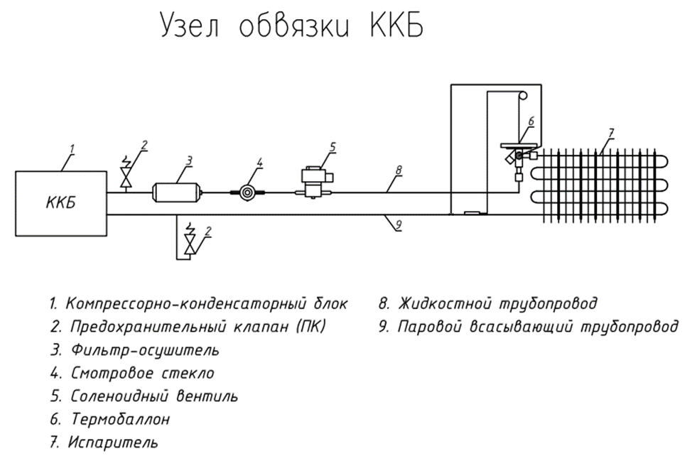
- Проход через стены и перекрытия
Узел прохода через стены, перекрытия, «зонтик», узел примыкания гидроизоляции (или ссылка на АР), растяжки для высоких труб.
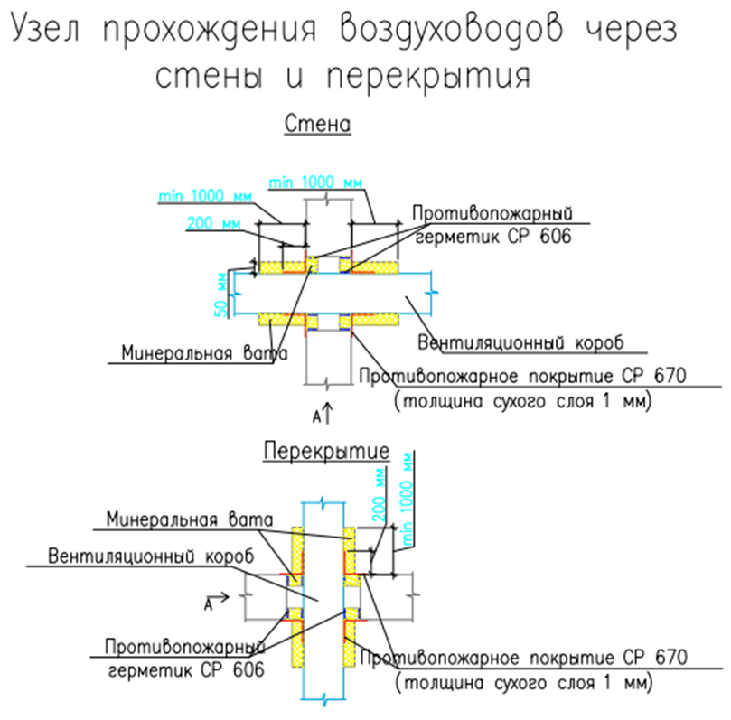
- Сложные пересечки в коридорах
Места, где воздуховоды, лотки, трубы ВК и спринклеры идут в 4 слоя. Нужен разрез или аксонометрия этого участка.
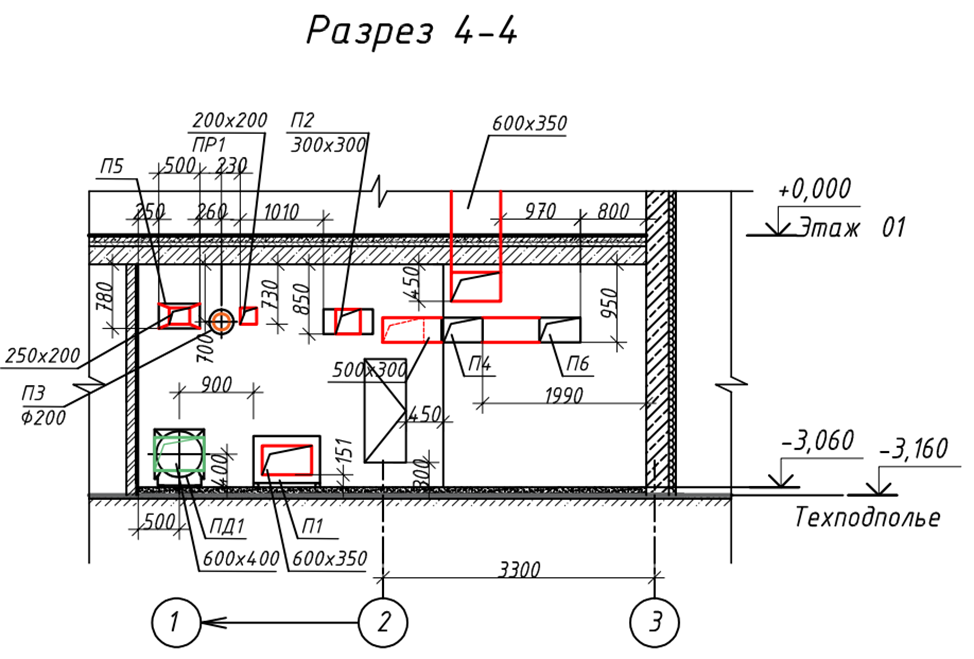
2. Отопление
- Узлы прохода через стену:
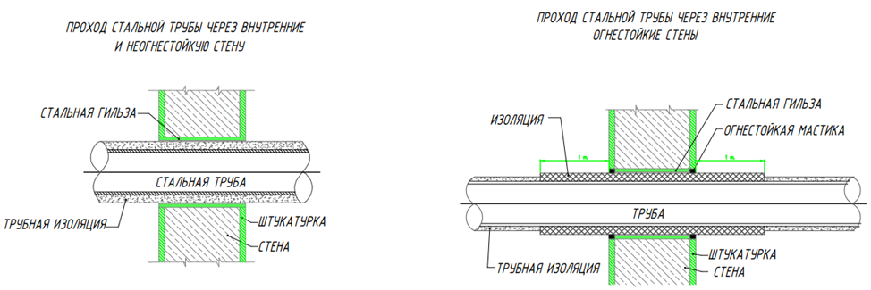
- Узел подключения радиатора:
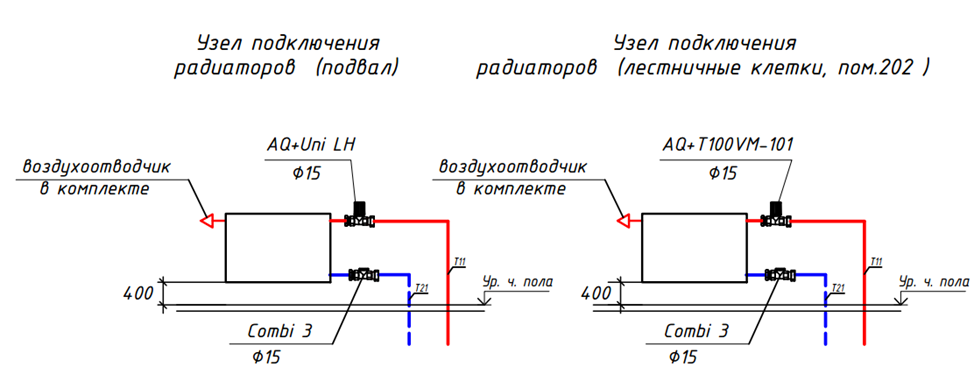
- Узлы крепления к строительным конструкциям
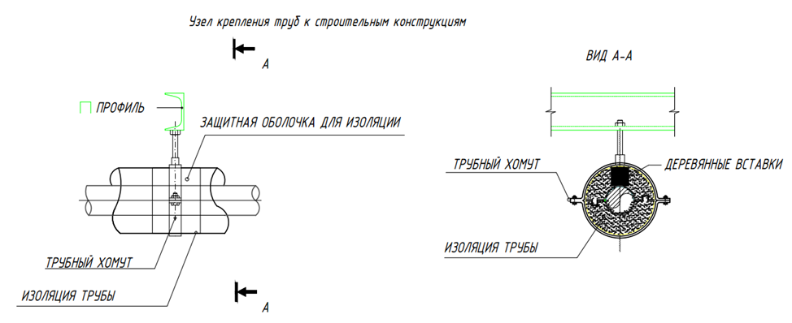
- Контуры укладки теплого пола
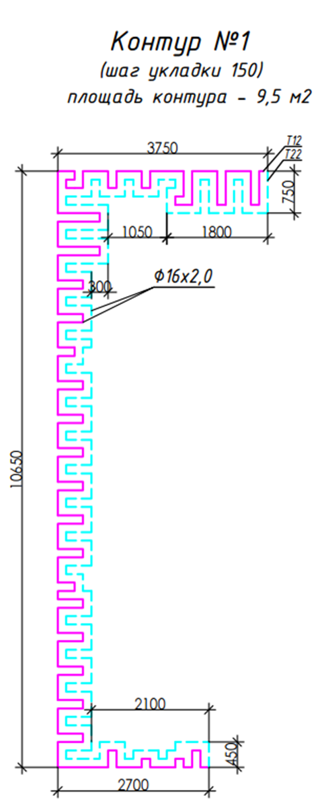
Как это сделать в Revit? Техники детализации
В Revit есть три способа создать узел. Рекомендуется комбинировать их.
Способ 1. «Фрагмент плана» – Живая модель
Идеально для планов венткамер и коллекторных шкафов.
- Инструмент: Вкладка Вид → Фрагмент .
- Обводим рамочкой нужную зону на плане этажа.
- Revit создает новый Вид.
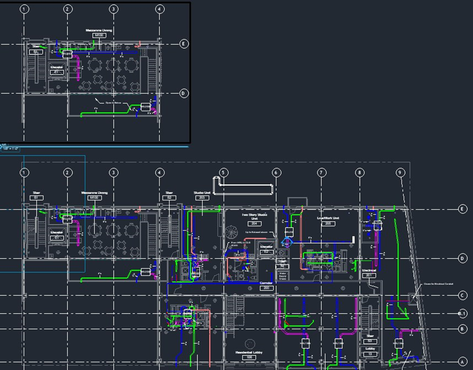
- Настройка:
- Ставим масштаб 1:20 или 1:25 и высокую детализацию.
- Оформление:
- Ставим марки на каждый кран, клапан, переход.
- Проставляем точные размеры (привязки оборудования к стенам).
Способ 2. «3D-узлы» (Аксонометрия) – Высший пилотаж
Монтажники молятся на такие схемы. Плоские чертежи читать трудно, 3D системы выглядят реалистично.
- Перейдите на 3D вид.
- Выделите элементы узла (например, коллекторный шкаф).
- Нажмите «Рамка выбора». Revit обрежет 3D вид только по этим элементам.
- Фиксация: внизу нажмите иконку «Домик с замком» → Сохранить ориентацию и блокировать вид.
- Аннотации: Теперь на этом 3D виде можно ставить марки оборудования и плоские примечания
- Выносим этот вид на лист.
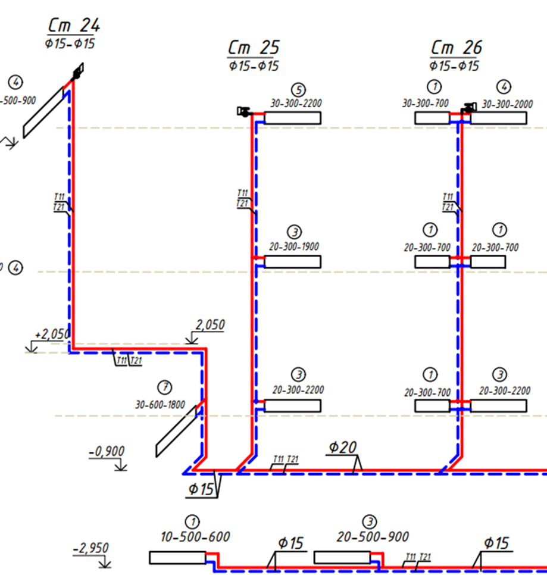
Способ 3. «Чертежный вид» – Типовые решения
Если вам нужно показать типовой узел крепления воздуховода или схему подключения радиатора, не нужно моделировать дюбели в 3D:
Вкладка Вид → Чертежный вид.
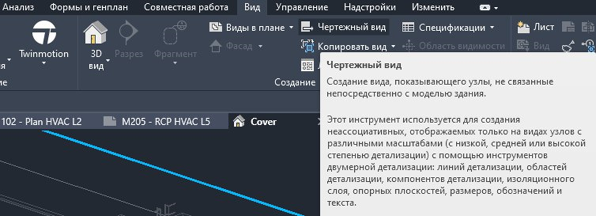
Это чистый лист, как в AutoCAD.
Вкладка Аннотации → Линии детализации / Компоненты узла.
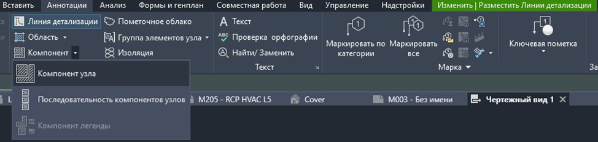
Рисуем узел линиями или вставляем готовые 2D-блочки (семейства узлов).
Этот узел не связан с моделью, он «типовой».
Спецификации: Нюансы оформления
Простая смешанная спецификация не годится для закупки.
1. Разделение по системам
Не смешивайте в одну кучу трубы отопления и вентиляцию.
- В свойствах спецификации → Фильтр → Имя системы содержит "Т11".
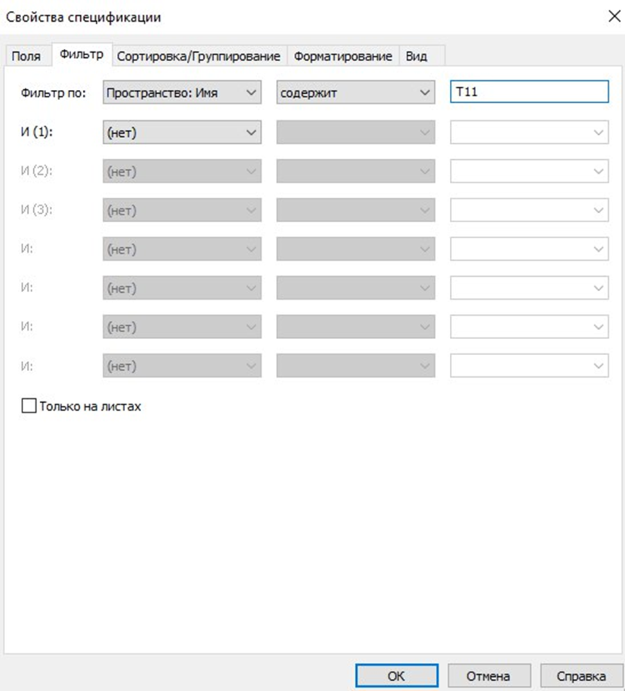
2. Запас на трубы и изоляцию
Revit считает чистую длину/площадь/количество. Для составления реальной заявки на материалы необходим коэффициент запаса. В спецификации создаем Расчетный
- Имя: Количество с запасом.
- Формула: Длина * 1.1 (добавляем 10%).
- Примечание: Арматуру (краны, насосы) берем без запаса!
3. Форматирование по ГОСТ 21.110
- Поля должны идти в порядке: Поз. → Наименование → Кол. → Масса → Примечание
- Используйте Сортировку/Группирование:
- Сначала по Имени системы.
- Затем по Категории (Трубы, Фитинги).
- И далее по Размеру.
Детализация – это забота о тех, кто будет строить. Хороший проект – это когда прорабу не нужно звонить вам каждый час с вопросом «А как это собрать?». Используйте мощь Revit (Фрагменты и 3D-виды), чтобы сделать чертежи понятными даже школьнику.
Проверочные карточки 3
Карточка 1

Согласно уроку, при разработке узла прохода через противопожарную преграду необходимо указывать тип преграды и предел огнестойкости. На соблюдение какого ключевого нормативного документа это требование напрямую работает и почему это критично?
- СП 7.13130. Это необходимо для подтверждения того, что узел не снизит огнестойкость самой преграды и обеспечит требуемую изоляцию помещений при пожаре.
- СП 60.13330. Это нужно для правильного теплового расчета
- ГОСТ 21.110. Это требование к оформлению чертежей
- СП 54.13330. Это нужно для обеспечения высот помещений
Ответ и пояснение
Ответ в исходных данных: СП 7.13130. Это необходимо для подтверждения того, что узел не снизит огнестойкость самой преграды и обеспечит требуемую изоляцию помещений при пожаре.
. Источник и ограничения. Проверка ответов, анимация и серверные функции недоступны в статической копии.